+10.1
Improvement over the base model
Bag-of-words F1 on held-out BSTRB video frames, Hawkeye 4B versus Qwen3-VL-4B (0.627 → 0.728). Hawkeye 8B improves on Qwen3-VL-8B by 6.9 points.
BSTRB benchmark · Hawkeye 4B & 8B
Smartphone recordings of household objects. At 2 Hz, the region in the green box is cropped and transcribed by base Qwen3-VL-4B, Hawkeye 4B, GPT-6 Astra and Claude Opus 5.5; each panel shows the most recent transcription and its latency. All sampled crops are shown; none were selected.
While modern Vision-Language Models (VLMs) have been remarkably successful in general scene text recognition, they consistently struggle with the long-tail distribution of text that is degraded by motion blur or low resolution. These limitations are particularly apparent in egocentric applications like smart glasses, where text is often captured in noisy environments. In this paper, we introduce the BSTRB (Blurry Scene Text Recognition Benchmark), a novel benchmark of 9,936 noisy image samples with high-fidelity ground-truth annotations derived from 1,699 real-world video sequences. To support this, we present Hawkeye4B, a VLM fine-tuned on BSTRB to read and reason about illegible text by leveraging deep contextual priors and pixel-level visual alignment. Our results show that Hawkeye4B matches or exceeds text transcription performance on much larger closed-weight VLMs, making it practical for real-time deployment. We characterize the text resolution at which current VLMs begin to fail.
Bag-of-words F1 on held-out BSTRB video frames, Hawkeye 4B versus Qwen3-VL-4B (0.627 → 0.728). Hawkeye 8B improves on Qwen3-VL-8B by 6.9 points.
BoW F1 of Hawkeye 8B on BSTRB video frames, the highest of the 24 models evaluated, including Qwen3-VL-235B (0.726), Kimi K2.6 (0.723) and GPT-6 Astra (0.709).
Number of general OCR benchmarks on which either Hawkeye model shows a statistically significant decrease in BoW F1 relative to its base model.
BSTRB consists of smartphone recordings of everyday objects (packaging, books, medicine, signage and screens), each recorded while the camera moves away from the object. Six frames are sampled per recording, so that a single transcription is paired with text whose height decreases from roughly 20 px to below 5 px. Transcriptions in the validation and test splits were verified by hand.
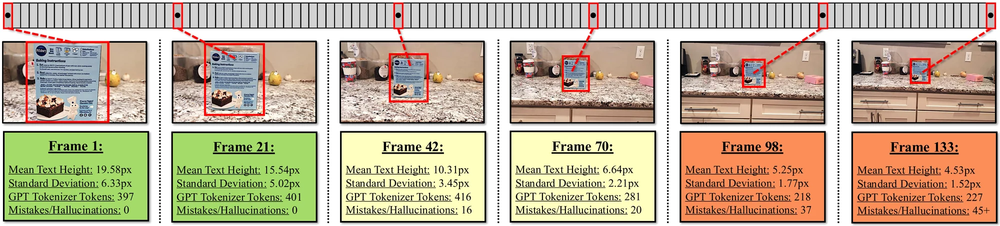
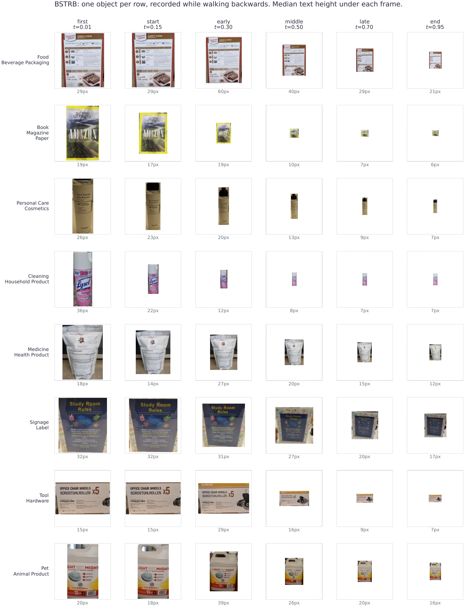
| Split | Video frames | Videos | Photos | Labels |
|---|---|---|---|---|
| train | 6,704 | 1,128 | 695 | automatic (GPT-5) |
| validation | 333 | 56 | 36 | human-verified |
| test | 1,325 | 223 | 241 | human-verified |
No recording appears in more than one split. The validation split was used for model selection; all reported results are on the held-out test split. Files are identified by neutral identifiers, image metadata (including location) has been removed, and access is gated by a data-use agreement. Automatic training labels for photographs are frequently incomplete; Hawkeye is therefore trained on video frames only.
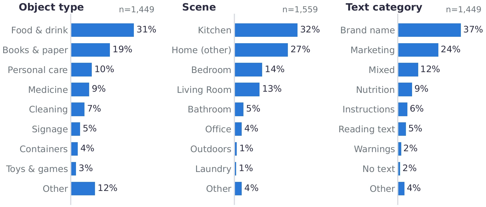
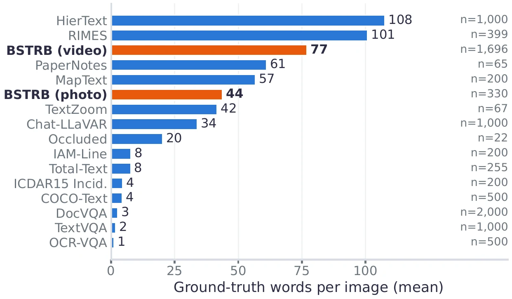
The improvement over the base model is largest for text below 20 px. On video frames, Hawkeye 8B attains the highest BoW F1 among the evaluated models.
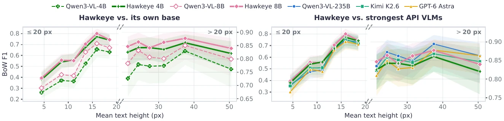
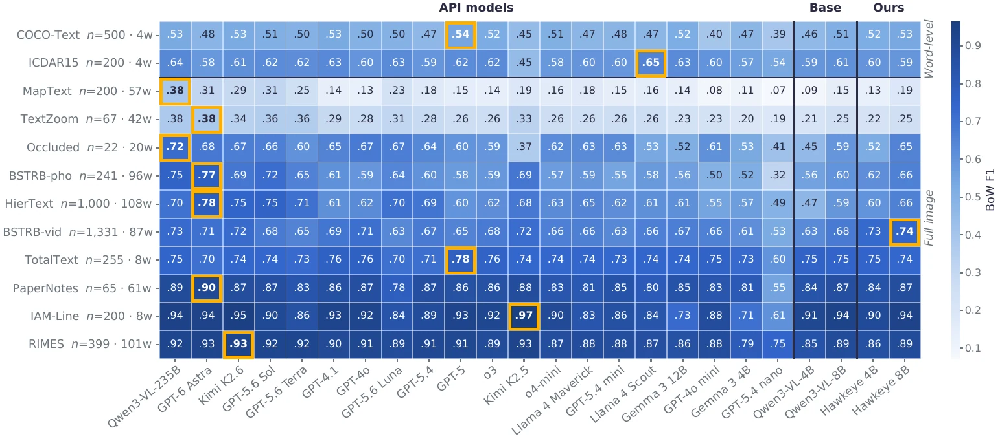
| Benchmark (held-out) | Hawkeye 4B − Qwen3-VL-4B | Hawkeye 8B − Qwen3-VL-8B |
|---|---|---|
| BSTRB video, BoW F1 | +10.1 pp (.627 → .728) | +6.9 pp (.675 → .744) |
| BSTRB photos, BoW F1 (241) | +6.0 pp | +5.3 pp |
| 10 general OCR sets, BoW F1 | 4 better, 6 n.s., 0 worse | 2 better, 8 n.s., 0 worse |
| Smart-glasses captures (37 objects) | BoW F1 +14.7, aligned F1 +16.6 pp; word inclusion n.s. | word inclusion +13.0, BoW F1 +11.5, aligned F1 +12.3 pp |
| Snellen charts, text ≤7 px (50 charts) | +7.2 pp | +7.5 pp |
| Repetition loops, BSTRB video ≤20 px | 14.3% → 7.2% | 8.5% → 5.2% |
Results as reported in the paper on the full held-out video set (1,331 frames, 224 videos); the public test split omits one video for privacy reasons, which changes every score by at most 0.001. Paired bootstrap confidence intervals, clustered by video (BSTRB), object (smart-glasses captures) or chart (Snellen), with Holm correction; highlighted cells are significant. pp: percentage points.
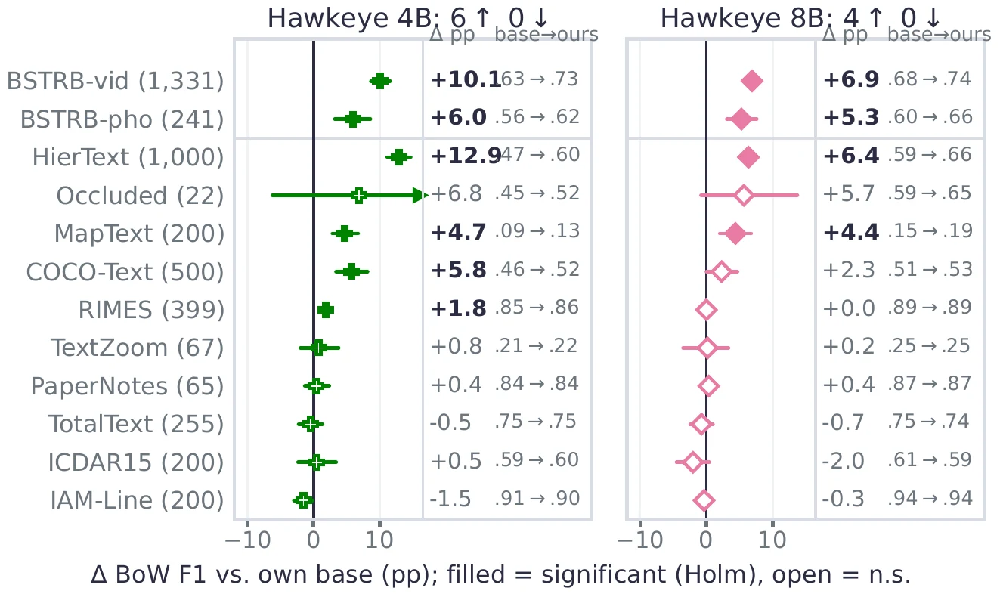
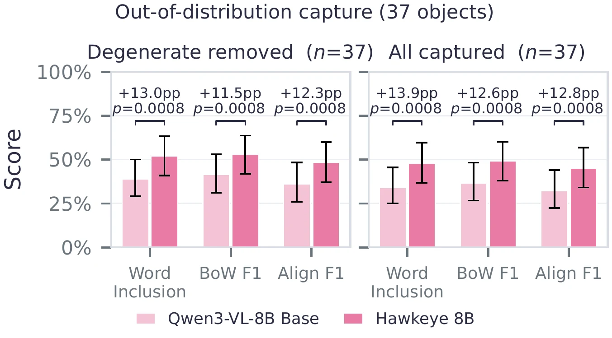
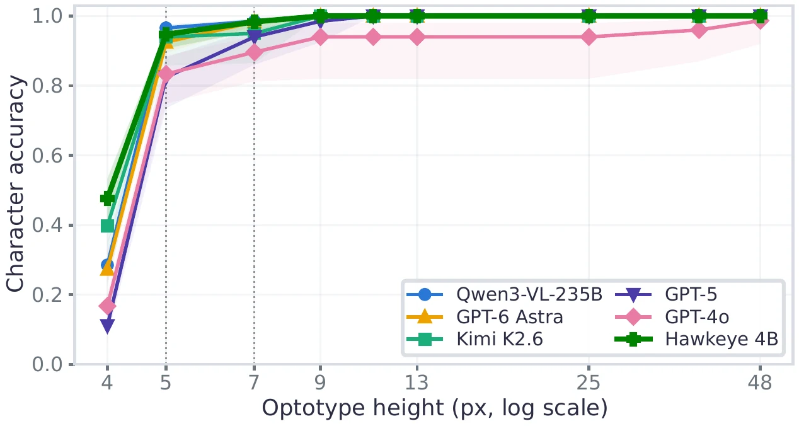
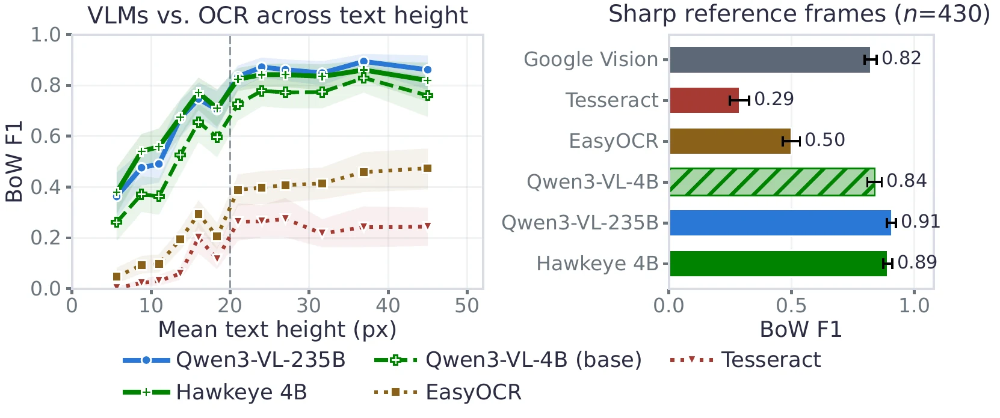
Median latency per crop on the 64 crops of the demonstration recordings, with all models given identical inputs. On a single local GPU, Hawkeye requires approximately one second per crop, comparable to Qwen3-VL-235B served through an API and 9–13 times faster than the reasoning API models, with no per-image cost.
| Model | Runs | AccuracyBSTRB video BoW F1 | First tokenseconds | Per tokenmilliseconds | Per cropseconds | Costper 1,000 crops |
|---|---|---|---|---|---|---|
| Measurements are being added. | ||||||
Mean attention over generated tokens on held-out frames. The base model attends mainly to the largest print, whereas Hawkeye also attends to smaller text, which it then transcribes.
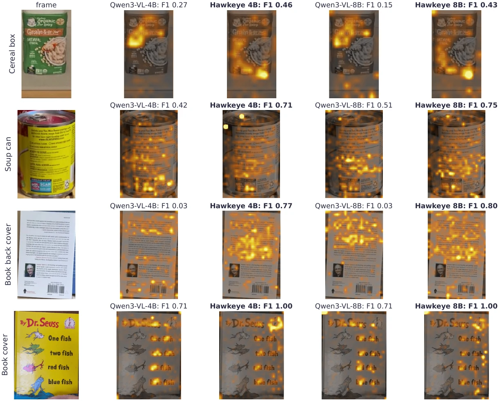
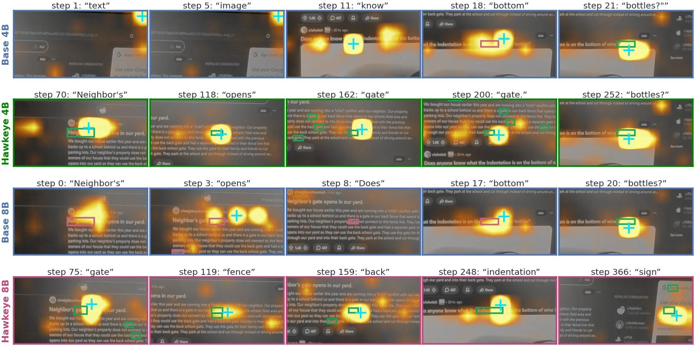
Attention to image patches is taken from the last four layers and averaged over heads; content-free attention-sink patches are excluded. Across all analysed frames, the attention peak of both models falls on the word being generated far more often than chance, and Hawkeye does not cover a larger share of the text regions on average. The difference lies in how much of the text it goes on to transcribe. The examples shown are illustrative.
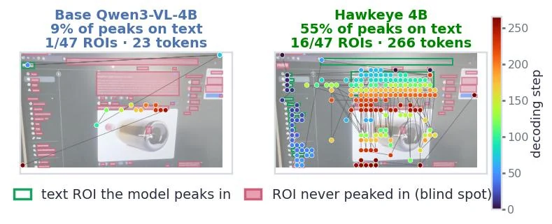
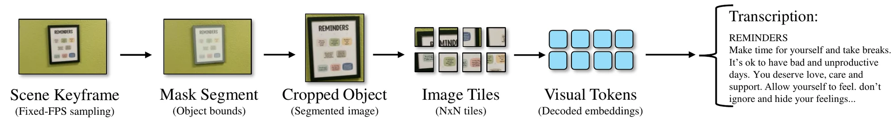
The hawkeye package implements the inference protocol used in the paper.
# pip install "hawkeye[infer] @ git+https://github.com/byron123t/hawkeye"
from hawkeye import Hawkeye
reader = Hawkeye("byron123t/Hawkeye-4B") # or "byron123t/Hawkeye-8B"
print(reader.read("photo.jpg"))A version using transformers directly is given on the model card; training, evaluation and analysis code is available in the GitHub repository.
@article{tang2026hawkeye,
title = {Hawkeye4B: Reading Illegible Text with Vision Language Models},
author = {Tang, Brian and Shin, Kang G.},
journal = {arXiv preprint arXiv:XXXX.XXXXX},
year = {2026}
}